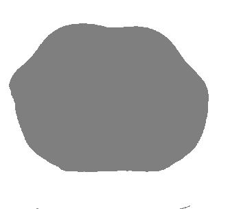

原文出处:本文由博客园博主芒果和小猫提供。
原文连接:https://www.cnblogs.com/WAoyu/p/12037576.html
原文连接:https://www.cnblogs.com/WAoyu/p/12037576.html
1. 肺部分割提取简介
在处理胸部CT时，我们常常需要获取肺部的一个mask，也就是将肺部结构从数据中提取出来。二维图像还好说，但是三维图像就会变得复杂复杂一点。肺部的分割常常做后续操作的预处理，所以有必要提取提取一个肺部的mask，来辅助后面的操作，所以这里利用传统图像处理方法来提取了一下肺部，当时方法又很多，这里只是抛砖引玉，也许对有些数据不适用，可以对其进行改动。
2. 原理
利用阈值分割、种子填充图像形态学、图像连通域这些操作来进行肺部的分割。
2.1 阈值分割
这个好理解，一般来说CT值的范围是-1000-+1000，而基于简单的观察，肺部就是胸腔内两个大的空洞，所以可以首先对图像进行二值化处理，这里是将CT大于-300的位置置为1，小于-300置为0，这样就将数据分为了三部分，外部空气，内部空气，躯干组织。如下图所示。

2.2 种子填充
利用种子填充算法，将外部的空气和内部的躯干分割出来，给定两个种子，一般就能分出来。分割的效果如下。然后再用阈值图像减去这个躯干就能得到初步的肺部mask。此时肺部的值是1，组织值是0。

2.3 图像形态学
因为肺内部有许多纤维，所以看起来会有以下空洞（相对于肺部来说），要填补这些空洞，所以利用形态学里的闭操作（先膨胀，再腐蚀）。先膨胀肺部，将小的空洞填充，再腐蚀，恢复原来的大小。
2.4 连通域
最后保留最大的连通域，此时最大的连通域就是肺部。
2.5 效果
以下图片是使用3dslicer渲染出来的。


3.代码
依赖库
- SimpleITK
- skimage
import SimpleITK as sitk
from skimage import measure
def lungmask(vol):
#获取体数据的尺寸
size = sitk.Image(vol).GetSize()
#获取体数据的空间尺寸
spacing = sitk.Image(vol).GetSpacing()
#将体数据转为numpy数组
volarray = sitk.GetArrayFromImage(vol)
#根据CT值，将数据二值化（一般来说-300以下是空气的CT值）
volarray[volarray>=-300]=1
volarray[volarray<=- 300]=0
#生成阈值图像
threshold = sitk.GetImageFromArray(volarray)
threshold.SetSpacing(spacing)
#利用种子生成算法，填充空气
ConnectedThresholdImageFilter = sitk.ConnectedThresholdImageFilter()
ConnectedThresholdImageFilter.SetLower(0)
ConnectedThresholdImageFilter.SetUpper(0)
ConnectedThresholdImageFilter.SetSeedList([(0,0,0),(size[0]-1,size[1]-1,0)])
#得到body的mask，此时body部分是0，所以反转一下
bodymask = ConnectedThresholdImageFilter.Execute(threshold)
bodymask = sitk.ShiftScale(bodymask,-1,-1)
#用bodymask减去threshold，得到初步的lung的mask
temp = sitk.GetImageFromArray(sitk.GetArrayFromImage(bodymask)-sitk.GetArrayFromImage(threshold))
temp.SetSpacing(spacing)
#利用形态学来去掉一定的肺部的小区域
bm = sitk.BinaryMorphologicalClosingImageFilter()
bm.SetKernelType(sitk.sitkBall)
bm.SetKernelRadius(2)
bm.SetForegroundValue(1)
lungmask = bm.Execute(temp)
#利用measure来计算连通域
lungmaskarray = sitk.GetArrayFromImage(lungmask)
label = measure.label(lungmaskarray,connectivity=2)
props = measure.regionprops(label)
#计算每个连通域的体素的个数
numPix = []
for ia in range(len(props)):
numPix += [props[ia].area]
#最大连通域的体素个数，也就是肺部
maxnum = max(numPix)
#遍历每个连通区域
for i in range(len(numPix)):
#如果当前连通区域不是最大值所在的区域，则当前区域的值全部置为0，否则为1
if numPix[i]!=maxnum:
label[label==i+1]=0
else:
label[label==i+1]=1
label = label.astype("int16")
l = sitk.GetImageFromArray(label)
l.SetSpacing(spacing)
return l
def main():
vol = sitk.ReadImage("Test.mha")
volarray = sitk.GetArrayFromImage(vol)
newvol = sitk.GetImageFromArray(volarray)
newvol.SetSpacing(vol.GetSpacing())
newvol.SetDirection(vol.GetDirection())
newvol.SetOrigin(vol.GetOrigin())
mask = lungmask(newvol)
sitk.WriteImage(mask,"newlungmask.mha")
if __name__ == "__main__":
main()